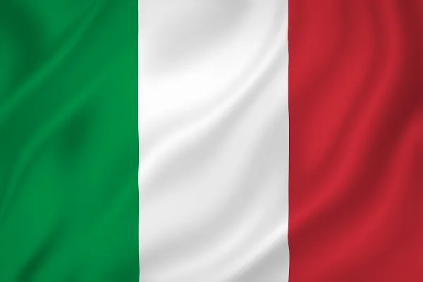

Sobre nós
EuroTour é um site que ajuda você a planejar sua viagem para a Europa, desde a compra das passagens, até a visita aos pontos turísticos mais importantes de cada região
Passagens
Hospedagem
Pontos Turísticos

Itália
Itália é um país da Europa Meridional com capital em Roma. Seu território apresenta relevo acidentado, com extensas cadeias montanhosas e registros de atividade vulcânica.
Portugal
Situado no oeste da Europa, Portugal é banhado pelo oceano Atlântico e faz fronteira apenas com a Espanha. Lisboa, sua capital, reúne quase um terço de toda a sua população.
Espanha
A Espanha é uma das nações mais ricas e industrializadas do mundo. Ela está na península Ibérica, extensão de terra localizada na Europa Ocidental, entre o oceano Atlântico e o mar Mediterrâneo.